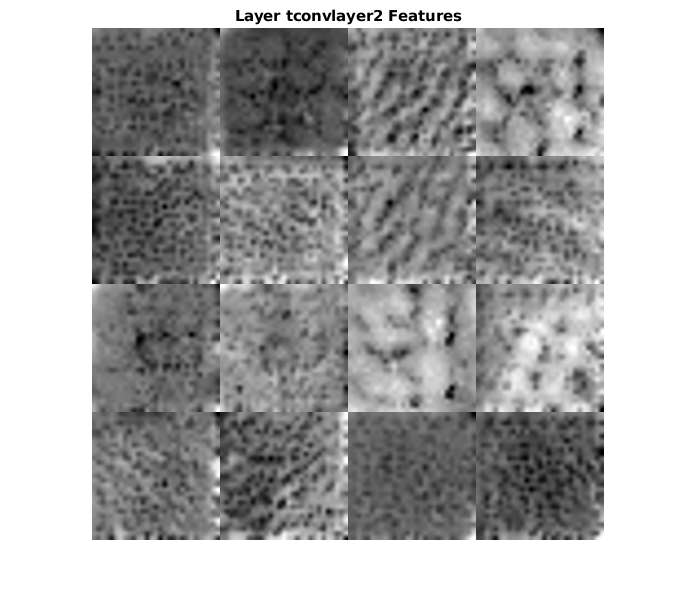

Contents
matlabroot = '/usr/local/MATLAB/R2019a';
digitDatasetPath = fullfile(matlabroot,'toolbox','nnet', ...
'nndemos','nndatasets','DigitDataset');
imds = imageDatastore(digitDatasetPath, ...
'IncludeSubfolders',true, ...
'LabelSource','foldernames');
load net.mat;
ni = 12;
imds.ReadSize = ni;
pure = transform(imds,@commonPreprocessing);
T = read(pure);
dsTest = transform(imds,@addNoise);
dsTest = transform(dsTest,@commonPreprocessing);
T1 = read(dsTest);
ypred = predict(net,dsTest);
T2 = ypred(:,:,:,1:ni);
n = 32;
full = zeros(n*ni,n*3);
error = zeros(1,ni);
ssims = zeros(1,ni);
rmse = zeros(1,ni);
for i=0:ni-1
orig = T{i+1};
full(n*i+1:n*i+n,1:n) = orig;
noise = T1{i+1};
full(n*i+1:n*i+n,n+1:2*n) = noise;
img = T2(:,:,:,i+1);
full(n*i+1:n*i+n,2*n+1:3*n) = img;
error(1,i+1) = sum((img-orig).*(img-orig))/sum(orig.*orig);
[ssimval, ssimmap] = ssim(double(orig),double(img));
ssims(1,i+1) = ssimval;
rmse(1,i+1) = sqrt(sum(sum((img-orig).*(img-orig)))/sum(sum(orig.*orig)));
end
net.Layers
ssims
rmse
imshow(full);
title('original-noise-denoised');
pause(2);
fprintf('denoising completed\n');
ans =
22x1 Layer array with layers:
1 'imageinput' Image Input 32x32x1 images with 'zerocenter' normalization
2 'convlayer1' Convolution 8 4x4x1 convolutions with stride [1 1] and padding 'same'
3 'BN1' Batch Normalization Batch normalization with 8 channels
4 'relu_1' ReLU ReLU
5 'maxlayer1' Max Pooling 2x2 max pooling with stride [2 2] and padding 'same'
6 'convlayer2' Convolution 16 4x4x8 convolutions with stride [1 1] and padding 'same'
7 'BN2' Batch Normalization Batch normalization with 16 channels
8 'relu_2' ReLU ReLU
9 'maxlayer2' Max Pooling 2x2 max pooling with stride [2 2] and padding 'same'
10 'convlayer3' Convolution 32 4x4x16 convolutions with stride [1 1] and padding 'same'
11 'BN3' Batch Normalization Batch normalization with 32 channels
12 'relu_3' ReLU ReLU
13 'maxlayer3' Max Pooling 2x2 max pooling with stride [2 2] and padding 'same'
14 'tconvlayer1' Transposed Convolution 32 4x4x32 transposed convolutions with stride [2 2] and cropping [1 1 1 1]
15 'relu_4' ReLU ReLU
16 'tconvlayer2' Transposed Convolution 16 4x4x32 transposed convolutions with stride [2 2] and cropping [1 1 1 1]
17 'relu_5' ReLU ReLU
18 'tconvlayer3' Transposed Convolution 8 4x4x16 transposed convolutions with stride [2 2] and cropping [1 1 1 1]
19 'relu_6' ReLU ReLU
20 'convlayer4' Convolution 1 3x3x8 convolutions with stride [1 1] and padding 'same'
21 'clippedrelu' Clipped ReLU Clipped ReLU with ceiling 1
22 'regressionoutput' Regression Output mean-squared-error with response 'Response'
ssims =
Columns 1 through 7
0.9821 0.9311 0.8602 0.9786 0.9358 0.9281 0.9542
Columns 8 through 12
0.9894 0.9776 0.9739 0.9858 0.9667
rmse =
Columns 1 through 7
0.1632 0.2687 0.4656 0.1803 0.2610 0.1919 0.2088
Columns 8 through 12
0.1118 0.1240 0.1371 0.1510 0.2017
denoising completed
d(ii)
layers = [2,6,10,14,16,18,20];
bounds = [8,16,32,32,16,8,1];
for i=1:7
channels = 1:bounds(i);
I = deepDreamImage(net,layers(i),channels,'PyramidLevels',1,'Verbose',false);
name = net.Layers(layers(i)).Name;
figure
I = imtile(I,'ThumbnailSize',[128 128]);
imshow(I)
title(['Layer ',name,' Features']);
pause(1);
end
pause(2);
fprintf("weights displayed\n");
weights displayed



d(iii)
for i=1:7
name = net.Layers(layers(i)).Name;
act1 = activations(net,T{1},name);
sz = size(act1);
figure
I = imtile(mat2gray(act1),'Gridsize',[ceil(bounds(i)/3),3]);
imshow(I);
title(['Layer ',name,' Activations'])
pause(1);
end
pause(2);
fprintf('activations displayed\n');
activations displayed

e(i)
prenet = denoisingNetwork('DnCNN');
full = zeros(n*ni,n*3);
for i=0:ni-1
noise = T1{i+1};
img = zeros(64,64);
img(1:32,1:32) = noise;
img(33:64,33:64) = noise;
img(1:32,33:64) = noise;
img(33:64,1:32) = noise;
I = denoiseImage(img,prenet);
img = I(1:32,1:32);
orig = T{i+1};
full(n*i+1:n*i+n,1:n) = orig;
noise = T1{i+1};
full(n*i+1:n*i+n,n+1:2*n) = noise;
full(n*i+1:n*i+n,2*n+1:3*n) = img;
error(1,i+1) = sum((img-orig).*(img-orig))/sum(orig.*orig);
[ssimval, ssimmap] = ssim(double(orig),double(img));
ssims(1,i+1) = ssimval;
rmse(1,i+1) = sqrt(sum(sum((img-orig).*(img-orig)))/sum(sum(orig.*orig)));
pause(1);
end
ssims
rmse
imshow(full);
title('original-noise-denoised(pre-trained)');
pause(2);
fprintf('denoised with existing network');
ssims =
Columns 1 through 7
0.9223 0.9195 0.9571 0.9558 0.9377 0.8987 0.9072
Columns 8 through 12
0.9576 0.8396 0.9643 0.9481 0.9340
rmse =
Columns 1 through 7
0.3331 0.3482 0.2935 0.2867 0.3378 0.4593 0.3602
Columns 8 through 12
0.2536 0.3930 0.2545 0.3366 0.3033
denoised with existing network e(ii)
I = im2double(imread('cameraman.tif'));
img = poissrnd(I*16);
img = img/max(img(:));
for i=1:8
for j=1:8
part = zeros(32,32,1);
part(1:32,1:32,:) = img(32*(i-1)+1:32*i,32*(j-1)+1:32*j);
ourrec = predict(net,part);
rec(32*(i-1)+1:32*i,32*(j-1)+1:32*j) = ourrec;
end
end
figure;
subplot(1,3,1);
imshow('cameraman.tif');
title('original');
subplot(1,3,2);
imshow(img);
title('noise');
subplot(1,3,3);
imshow(rec);
title('denoised');
fprintf('tested with cameraman.tif\n');
tested with cameraman.tif